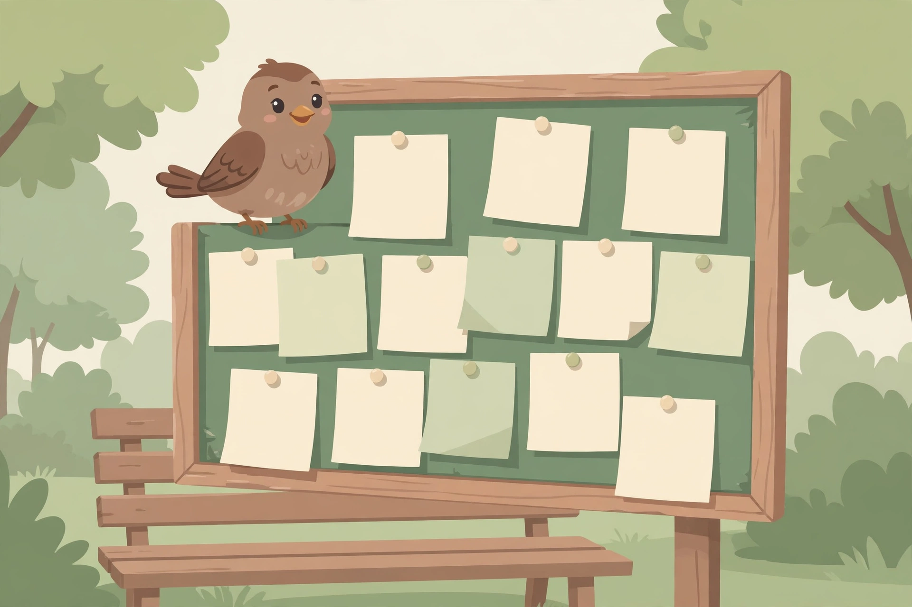

A village green notice board where every post is one of the mirror's own.
A mirror of the social kind of website: posts, a feed, and a score for every post.
Signature Social is a mirror of the social kind of website: a website where people share short posts, follow each other, and comment. Social websites began as plain lists of messages in time order, then grew follow lists, like counts, comment threads, and feeds ranked by score. This mirror follows the same shape — posts, a feed, and comments counted — rebuilt with Signature branding and the network's own data.
Works out a post's score by the mirror's own rule: likes plus twice the comments. It cannot like or comment for you — it only works out the score.
Ranks the mirror's own sample posts by score, highest first — the mirror's own feed order. You can also try a short message of your own: it joins the top of the feed, and the feed lives only in this page.
Designs, printables, and demos only — free to download and make. Nothing here is for sale.
A set of postcards, one for each sample post, with the post's words on the front and room for your own note on the back.
Signature design A design, not a good for sale. Free to download and make.
A board game for the whole feed: move your token along the green, score points for likes and comments, and reach the notice board first.
Signature design A design, not a good for sale. Free to download and make.
A sheet of badges for the feed: one badge for each sample name, with a small picture of what they posted about.
Signature design A design, not a good for sale. Free to download and make.
Fun, labeled fun — not a fact. The Village Green notice board is a made-up board of notices: a lost umbrella (found, twice), a call for the best harvest song, and a reminder that the sparrows meet at dawn and do not take minutes. None of these notices were ever posted; they are a story for the green.
Tools (JavaScript)Design sheet 1Design sheet 2Design sheet 3
Sage the sparrow is the mascot of this themed version. Questions about the subject go to Group 3.